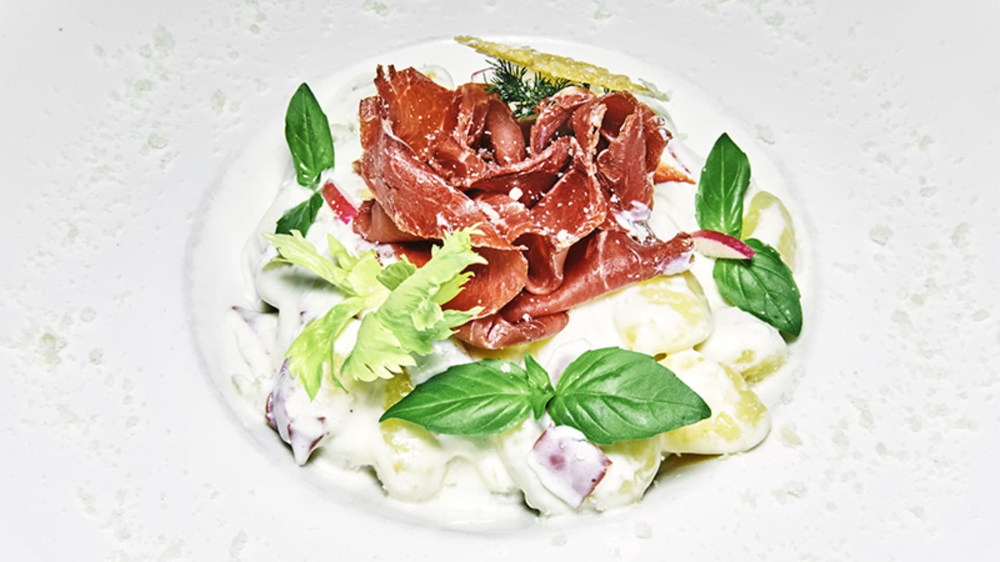
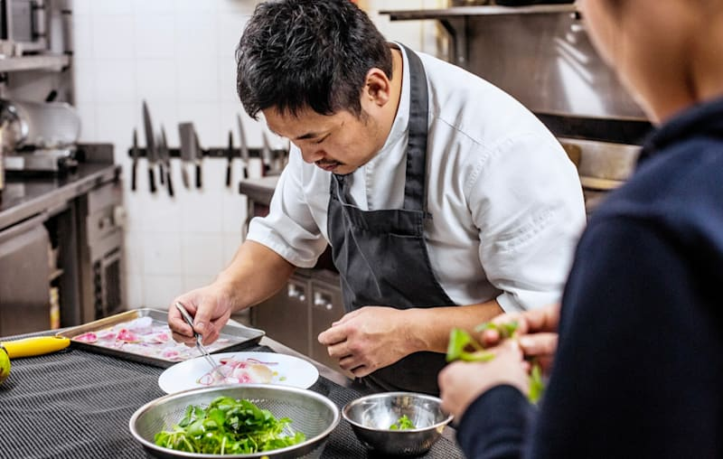
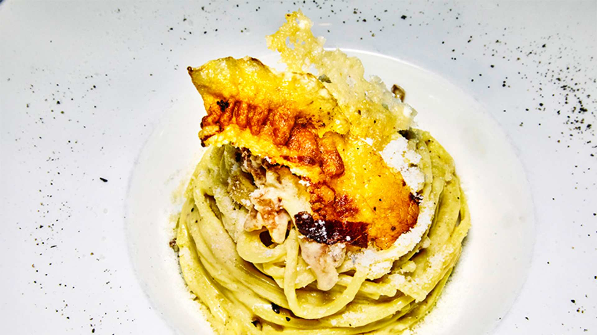
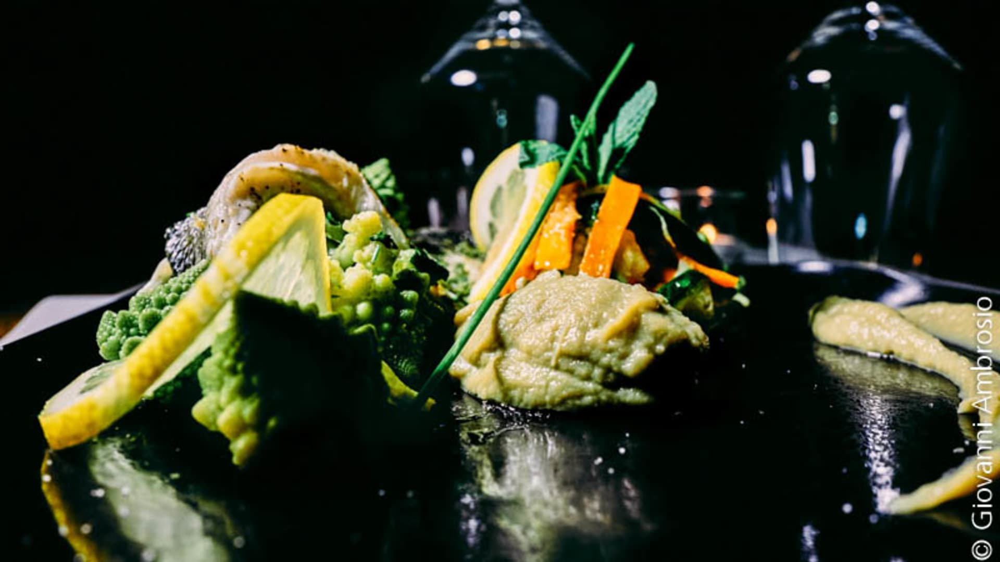
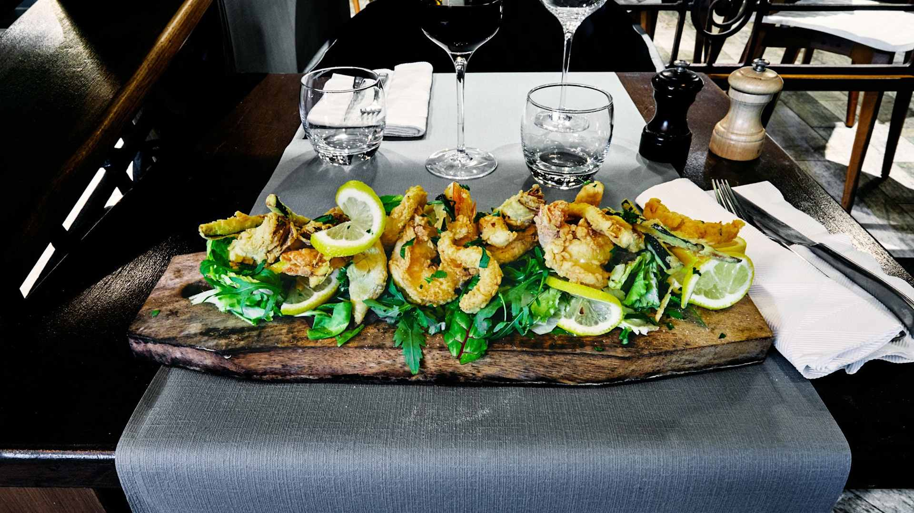

Carpaccio di Bresaola
Bresaola, crème onctueuse, roquette et copeaux de parmesan.
Cucina italiana · Saint-Maur-des-Fossés
Pizza au feu de bois · Pâtes fraîches maison · 4,6/5 sur 1 774 avis

Notre Maison
Chez L'Artusi, nous portons le nom de Pellegrino Artusi, le père de la cuisine italienne moderne — et nous lui rendons hommage chaque jour. Pâtes fraîches préparées maison, pizzas cuites au feu de bois et produits choisis avec soin : ici, la générosité italienne se déguste dans l'assiette.
Au cœur de Saint-Maur-des-Fossés, sur la Place Garibaldi, notre table est devenue une adresse incontournable du quartier — chaleureuse, conviviale, et fièrement italienne.
À ne pas manquer
Les incontournables qui font la réputation de la maison.

Bresaola, crème onctueuse, roquette et copeaux de parmesan.

Préparées chaque jour dans nos cuisines, à l'italienne.

Selon le marché et l'inspiration du jour.

Friture de la mer croustillante, citron et roquette.
En images
Quelques-uns des plats qui vous attendent.
Ils nous adorent
« Les meilleures pizzas du coin, une pâte parfaite et un accueil adorable. On revient à chaque fois. »
— Avis client
« Pâtes fraîches maison délicieuses, cadre chaleureux et service impeccable. Une vraie adresse italienne. »
— Avis client
« Le tiramisu à la pistache est à tomber. Rapport qualité-prix excellent, je recommande vivement. »
— Avis client
Réserver · Nous trouver
Réservez en ligne en quelques secondes, ou appelez-nous directement. Pour les groupes et événements, contactez-nous par téléphone.